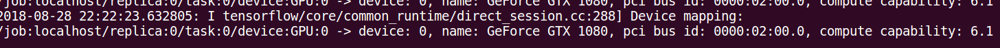

How to tell if tensorflow is using gpu acceleration from inside python shell?
I have installed tensorflow in my ubuntu 16.04 using the second answer here with ubuntu's builtin apt cuda installation.
Now my question is how can I test if tensorflow is really using gpu? I have a
gtx 960m gpu. When I import tensorflow this is the output
I tensorflow/stream_executor/dso_loader.cc:105] successfully opened CUDA library libcublas.so locally I tensorflow/stream_executor/dso_loader.cc:105] successfully opened CUDA library libcudnn.so locally I tensorflow/stream_executor/dso_loader.cc:105] successfully opened CUDA library libcufft.so locally I tensorflow/stream_executor/dso_loader.cc:105] successfully opened CUDA library libcuda.so.1 locally I tensorflow/stream_executor/dso_loader.cc:105] successfully opened CUDA library libcurand.so locally
Is this output enough to check if tensorflow is using gpu ?
Answer
No, I don't think "open CUDA library" is enough to tell, because different nodes of the graph may be on different devices.
When using tensorflow2:
print("Num GPUs Available: ", len(tf.config.list_physical_devices('GPU')))
For tensorflow1, to find out which device is used, you can enable log device placement like this:
sess = tf.Session(config=tf.ConfigProto(log_device_placement=True))
Check your console for this type of output.

Suggest
Apart from using sess =
tf.Session(config=tf.ConfigProto(log_device_placement=True)) which is
outlined in other answers as well as in the official TensorFlow documentation,
you can try to assign a computation to the gpu and see whether you have an
error.
import tensorflow as tf with tf.device('/gpu:0'): a = tf.constant([1.0, 2.0, 3.0, 4.0, 5.0, 6.0], shape=[2, 3], name='a') b = tf.constant([1.0, 2.0, 3.0, 4.0, 5.0, 6.0], shape=[3, 2], name='b') c = tf.matmul(a, b) with tf.Session() as sess: print (sess.run(c))
Here
- "/cpu:0": The CPU of your machine.
- "/gpu:0": The GPU of your machine, if you have one.
If you have a gpu and can use it, you will see the result. Otherwise you will see an error with a long stacktrace. In the end you will have something like this:
Cannot assign a device to node 'MatMul': Could not satisfy explicit device specification '/device:GPU:0' because no devices matching that specification are registered in this process
Recently a few helpful functions appeared in TF:
- tf.test.is_gpu_available tells if the gpu is available
- tf.test.gpu_device_name returns the name of the gpu device
You can also check for available devices in the session:
with tf.Session() as sess: devices = sess.list_devices()
devices will return you something like
[_DeviceAttributes(/job:tpu_worker/replica:0/task:0/device:CPU:0, CPU, -1, 4670268618893924978), _DeviceAttributes(/job:tpu_worker/replica:0/task:0/device:XLA_CPU:0, XLA_CPU, 17179869184, 6127825144471676437), _DeviceAttributes(/job:tpu_worker/replica:0/task:0/device:XLA_GPU:0, XLA_GPU, 17179869184, 16148453971365832732), _DeviceAttributes(/job:tpu_worker/replica:0/task:0/device:TPU:0, TPU, 17179869184, 10003582050679337480), _DeviceAttributes(/job:tpu_worker/replica:0/task:0/device:TPU:1, TPU, 17179869184, 5678397037036584928)